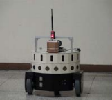
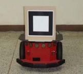
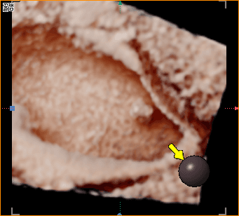
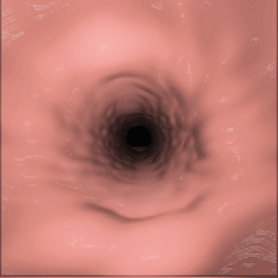
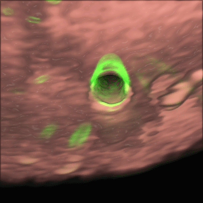
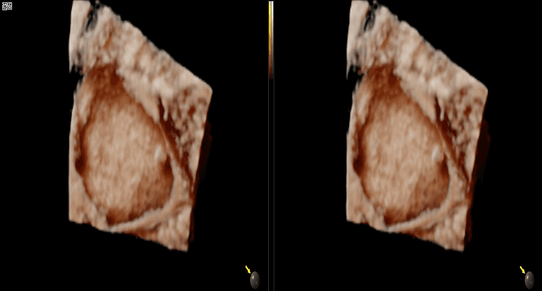
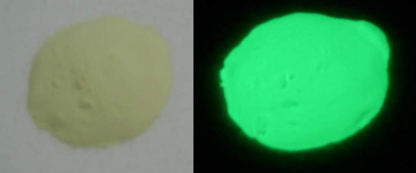

Brief Biography
My research interests include Ultrasound Image Processing, Volume Rendering, Multi-agent Learning Control System and its application.
I received the M.S. degree in School of Information and Mechatronics from Gwangju Institute of Science and Technology (GIST), Korea, 2011, and the B.S degree in Electrical and Computer Engineering from University of Seoul, Korea, 2009.
I am currently Research Engineer in Medical Imaging R&D department at Samsung. Prior to joining Samsung in 2013, I was a researcher in Engineering Research Center for Advanced Control and Instrumentation (ERC-ACI) at Seoul National University from 2011 to 2012, and a research intern at KIST from 2005 to 2006.
CV : [pdf]
Research
- Project
- Bio-insect interaction experiment (government project)
- Publication
- Han-Eol Kim, Master Thesis, "Multiagent Cooperative Reinforcement Learning: Convergence Proofs and Applications", School of Information and Mechatronics, Gwangju Institute of Science and Technology, 2011. - Han-Eol Kim, Hyo-sung Ahn, “Convergence of Multiagent Q-Learning: Multi Action Replay Process Approach”, IEEE ISIC 2010, Yokohama, Japan - Han-Eol Kim, Hyo-sung Ahn, “Multi-agent cooperative reinforcement learning for heterogeneous mobile robots”, ICMIT 2009, Gwangju, Korea - Han-Eol Kim, Hyo-sung Ahn, “A review on Q-Learning convergence theorem”, KACC 2009, Busan, Korea
- Tool and Library
- Visual Studio 2005 C/C++, MFC, Pioneer Robot SDK, OpenCV, Ultrasonic Satellite, MATLAB
- Images
Mobile Robot - HeWit |
Mobile Robot - Pioneer |
 RL Simulation |
 RL Experiment |
- Project
- CEMTool: Script based control system simulation software (MALTAB-like) - CEMStudio: GUI based control system simulation software (Simulink, LabVIEW-like) - ImageMaker: GUI based image processing design tool - CQR: GUI based Quad rotor simulator using AR drones - MathFreeOn: Cloud-based simulation software (government project) - seaHERO: Seawater desalination simulation software (government project) - Toolbox development (Numerical Analysis, Control Engineering, Image Processing)
- Publication
- Han-Eol Kim, Bong-hee Seo, Kwang-jin Kim, “CEMStudio: model-based simulation software for general-purpose signal processing”, KMMS 2012, Seoul, Korea (*Best Award Paper) - Han-Eol Kim, Huy Bien, Kwang-Jin Kim, Jun-Ha Kim, “seaHERO: Modeling and Simulation Software for Seawater Desalination Plant”, 4th International Desalination Workshop 2011, Jeju, Korea - Young Wook Kwon, Han-Eol Kim, Wook-hyun Kwon, Soohee Han, "Golf swing simulation using a double inverted pendulum", IEIE 2011, Jeju, Korea
- Tool and Library
- Visual Studio 6/2008/2010 MFC, C/C++/C#, InstallShield, OpenCV, Kinect, LAPACK, MKL, OpenMP, MATLAB, LabVIEW, HTML5, Java Script, CSS, Apache, MySQL, PHP
- Images
- Project
- Main software development of ultrasound diagnosis equipment 1) 2D/3D image module, user interface, engine development, and debugging 2) 2D/3D memory management, image optimization - Ultrasound image processing and its application 1) 3D viewer simulator (3D rendering, DICOM) 2) 3D elastography rendering, specular reflection rendering, endoscopic rendering, stereoscopic rendering, 3D panoramic rendering 3) Polyp segmentation and its visualization 4) Voxel to mesh 3D data converter, volume converter for 3D printer 5) Mimicking human body phantoms (vessel, gallbladder, polyp) - Web UI 1) HTML5 based user interface and image streaming - Sensors and embedded systems 1) Probe recognition system (EMI sensing, metal detection, FFT) 2) 3D freehand panoramic system (acoustic sensor, IMU) - Deep Learning 1) Ultrasound image organ classifier - Clinical research with domestic and international hospitals
- - Patent
- Dong-yoon Park, HanEol Kim, DongHoon Oh, DongGyu Hyun, "Input apparatus and medical image apparatus comprising the same", US Patent 20160162163A1 - Han-Eol Kim, Dong-hoon Oh, "ULTRASOUND DIAGNOSIS APPARATUS AND METHOD", US Patent 20160128672A1 - Han-Eol Kim, "Ultrasound diagnosis apparatus and method of displaying ultrasound image", US Patent 20150257738A1, Europe Patent 2918233A1, China Patent 104905814A
- Tool and Library
- C++, C#, Delphi (Pascal), DirectX (HLSL), IPP, OpenCV, itk, vtk, ImageJ, dcmtk, caffe - HTML5, Java Script, CSS, PHP, MySQL, Apache - ARM Cortex M3 (TI CC2650), CCS, IAR
- Images
Specular reflection rendering |
Endoscopic rendering |
Endoscopic seethru rendering |
Stereoscopic rendering |
 Polyp measurement |
- Project
- Green-Emitting Alkaline Earth Aluminate Phosphor - Experimental environment setting, data analysis
- Publication
- Doory Kim, Han-Eol Kim, Chang-Hong Kim, "Effect of Composition and Impurities on the Phosphorescence of Green-emitting Alkaline Earth Aluminate Phosphor", PLoS ONE, 2016 - Han-Eol Kim, Doory Kim, Chang-Hong Kim, "Energy Transfer between Two Phosphorescent Phosphors", Korean Chemical Society 2007, Daegu, Korea
- - Patent
- Han-Eol Kim, Chang-hong Kim, Doory Kim, “Enhancement of long persistent phosphorescence by chemical mixing of two or more phosphorescent phosphors with spectral overlap”, KR Patent pending (2020090009795) - Doory Kim, Chang-hong Kim, Han-Eol Kim, "Fluorescent lamp with phosphorescent mold cover", KR Patent pending (10-2006-0071858)
- Tool and Library
- Visual Basic, PIC-C, Origin
- Images
Green-emitting phosphor |
Contact Info
x@gmail.com, where x is loenahmik